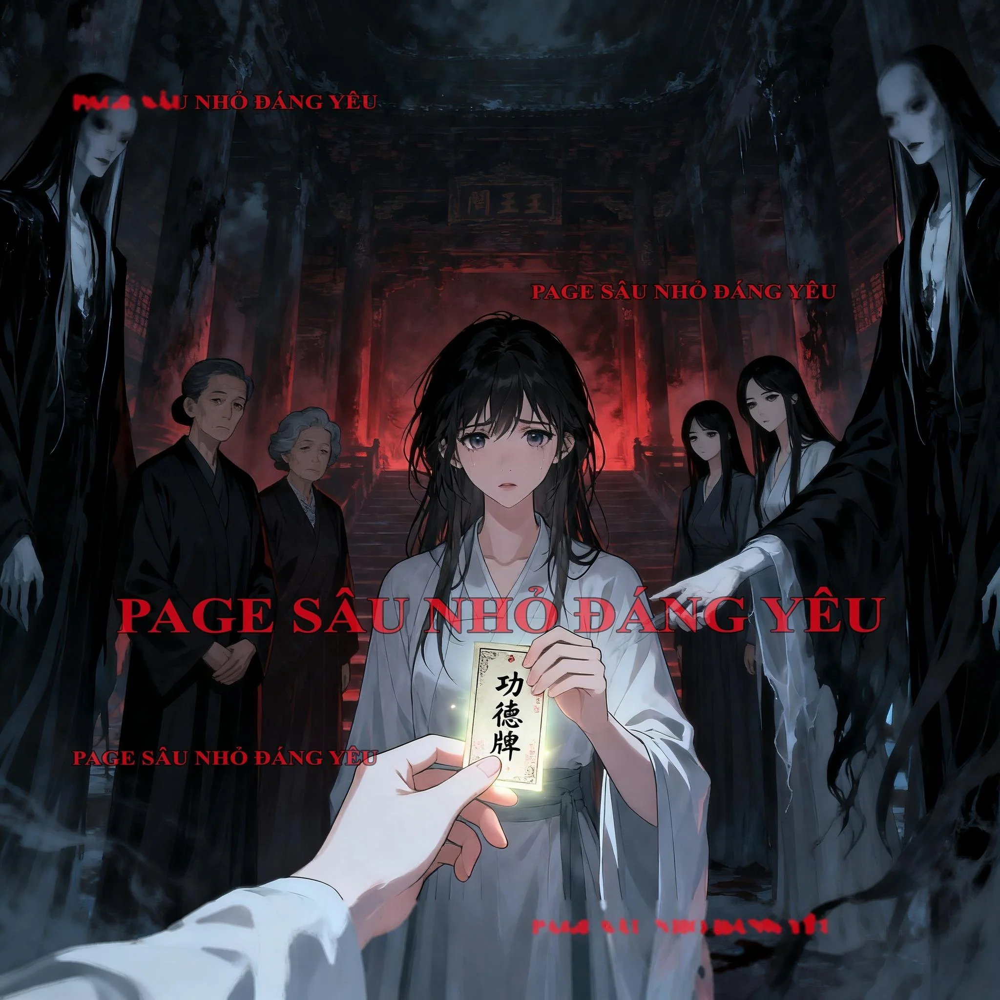

CÁI GIÁ CỦA KẺ PHẢN BỘI
Đêm khuya mười giờ, chồng tôi – Khưu Trạch Ngôn – vẫn đang tăng ca.Tôi nằm trên giường, trong lúc buồn chán vô thức lướt phải một đoạn video hot với tiêu đề “Tôi kính tôi”.Trong video, một cô gái xinh xắn đang cầm ly sữa, bên môi còn vương chút sữa trắng.Cô ấy nhìn vào ống kính, nói:“Ly thứ nhất, tôi kính tôi, nếu không phải tôi mặt dày van nài suốt bốn ngày mới xin được WeChat của anh ấy, thì câu chuyện của chúng tôi đã chẳng có bắt đầu.”Khi cô đang nói, một chàng trai mặc áo thun sọc xuất hiện trong khung hình, nhưng không lộ mặt.“Ly thứ hai, tôi vẫn kính tôi, Giáng sinh năm ngoái, tuyết lớn như vậy, tôi vẫn bất chấp tất cả đến thành phố của anh ấy, chỉ để được gặp anh ấy một lần.”“Ly thứ ba, tôi muốn kính anh ấy – chàng trai tôi yêu, cuối cùng vẫn không vượt qua được rào cản hiện thực, phải cưới người con gái khác. Tôi chúc anh ấy hạnh phúc viên mãn, mọi sự như ý!”Đôi mắt cô gái dần ửng đỏ, còn tim tôi thì dần lạnh băng.Chỉ vì chàng trai mà cô ấy thổ lộ tình cảm, chiếc áo thun sọc trên người anh ta là tôi mua.Video rất ngắn, kết thúc ở hình ảnh đôi mắt đỏ hoe của cô gái.Bình luận phía dưới bùng nổ:【Hu hu hu, chị gái đáng thương quá, người có tình không thể nên duyên.】【Có trở ngại hiện thực gì, nói thử nghe xem, mọi người sẽ giúp chị hiến kế.】【Chị gái nói là thành phố S đúng không, tôi biết tuyết Giáng sinh năm ngoái lớn cỡ nào, lúc đó nhiều phương tiện giao thông đều bị tê liệt, mà chị vẫn có thể tới nơi.】Phần lớn bình luận đều ca tụng tình yêu vĩ đại của họ, nhưng cũng có vài người chỉ ra điểm mờ ám:【Sao cảm giác nói năng lấp lửng vậy nhỉ, cứ thấy kỳ kỳ sao ấy.】【Sao nam chính không lộ mặt? Là không muốn lộ hay không dám lộ?】【Bạn bên trên nói đúng, cố tình không lộ mặt là có vấn đề.】Nhưng những bình luận này rất nhanh đã biến mất.Tôi nằm trên giường, trong lòng dấy lên một cơn ớn lạnh.Bởi vì chàng trai trong video, quá giống Khưu Trạch Ngôn.